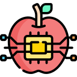

¿Qué es la inteligencia artificial?
a) Un campo de estudio en la biología.
b) Una rama de la química.
c) Un campo de la informática.
¿Cuáles son los dos tipos principales de inteligencia artificial?
a) IA rápida e IA lenta.
b) IA débil e IA fuerte.
c) IA pequeña e IA grande.
¿Cuáles son algunos ejemplos de inteligencia artificial?
a) Redes sociales y videojuegos.
b) Recetas de cocina y tácticas de fútbol.
c) Siri de Apple, Google Assistant y Amazon Alexa
¿Cuáles son algunas aplicaciones de la inteligencia artificial?
a) Reconocimiento facial y diagnóstico médico asistido por ordenador.
b) Producción de música y arte.
c) Control de tráfico aéreo y agricultura.
¿Cuáles son algunas consideraciones éticas importantes en la inteligencia artificial?
a) Valores religiosos y normas sociales.
b) Política y economía.
c) Sesgo algorítmico, privacidad y seguridad de datos.
¿Qué es una red neuronal artificial y cómo se utiliza en inteligencia artificial?
a) Un tipo de red de pesca utilizada en la pesca submarina.
b) Un modelo computacional inspirado en el funcionamiento del cerebro humano.
c) Una técnica de tejido neuronal utilizada en cirugías cerebrales.
¿Cuál es un ejemplo de inteligencia artificial en el campo de los videojuegos?
a) Juegos de mesa como el ajedrez.
b) Generación automática de jugadores NPC.
c) Uso de dados y cartas.
¿Cómo puede ayudar la inteligencia artificial en la conservación del medio ambiente?

a) No tiene aplicación en este campo.
b) Ayudando a la creación de basura electrónica.
c) La protección de especies en peligro de extinción, gestión de recursos naturales.